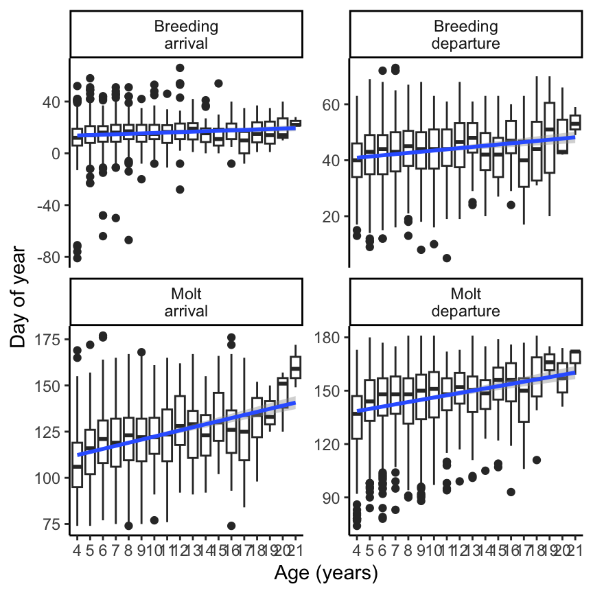

Elephant seal reproductive success declines with age.
Reproductive declines persist to the next generation (maternal effect senescence). That is, offspring survival and recruitment are decreased.
Offspring sex ratios shift towards males with old age.
Phenology is shifted later for older animals and breeders.
Results
n = 1202 distinct animals
H1: Age distribution and breeding status
We predicted that breeding success would decline with age. We found that breeding success increases to prime age, then decreases at older ages (Figure 1).
Generalized linear mixed model fit by maximum likelihood (Laplace
Approximation) [glmerMod]
Family: binomial ( logit )
Formula: observed_int ~ poly(age10, 2, raw = TRUE) + (1 | animalID) +
(1 | year)
Data: sealdat
Control: glmerControl(optimizer = "bobyqa")
AIC BIC logLik deviance df.resid
2563.4 2595.3 -1276.7 2553.4 4382
Scaled residuals:
Min 1Q Median 3Q Max
-6.0343 0.1780 0.2559 0.3525 0.7123
Random effects:
Groups Name Variance Std.Dev.
animalID (Intercept) 0.4450 0.6671
year (Intercept) 0.6102 0.7811
Number of obs: 4387, groups: animalID, 1202; year, 36
Fixed effects:
Estimate Std. Error z value Pr(>|z|)
(Intercept) 1.6091 0.3244 4.960 7.06e-07 ***
poly(age10, 2, raw = TRUE)1 2.7863 0.6779 4.110 3.95e-05 ***
poly(age10, 2, raw = TRUE)2 -1.3199 0.3380 -3.905 9.43e-05 ***
---
Signif. codes: 0 '***' 0.001 '**' 0.01 '*' 0.05 '.' 0.1 ' ' 1
Correlation of Fixed Effects:
(Intr) p(10,2,r=TRUE)1
p(10,2,r=TRUE)1 -0.856
p(10,2,r=TRUE)2 0.794 -0.971
Figure 1: A: Age structure of northern elephant seals at Año Nuevo. B: Percentage of each age class that were observed breeding.
Population level prediction - the fact that the raw data falls above it comes from the fact that those age classes are correlated with years and individuals that were very successful.
Sample size n = 4387.
H2: Maternal effect senescence
We predicted that reproductive declines would carry over to the next generation - that is, pups born to older mothers would have decreased survival and recruitment success.
We found that neither pup survival nor recruitment is significantly affected by maternal age (Figure 2).
We reject our hypothesis: reproductive declines do not persist to the next generation, and there is no evidence of maternal effect senescence.
Generalized linear mixed model fit by maximum likelihood (Laplace
Approximation) [glmerMod]
Family: binomial ( logit )
Formula: pup_survived_dbl ~ poly(age10, 2, raw = TRUE) + (1 | animalID) +
(1 | year)
Data: surv_recruit_data
AIC BIC logLik deviance df.resid
576.4 598.4 -283.2 566.4 588
Scaled residuals:
Min 1Q Median 3Q Max
-0.7288 -0.5013 -0.4262 -0.3348 2.9232
Random effects:
Groups Name Variance Std.Dev.
animalID (Intercept) 1.268e-07 0.0003561
year (Intercept) 2.279e-01 0.4774077
Number of obs: 593, groups: animalID, 394; year, 28
Fixed effects:
Estimate Std. Error z value Pr(>|z|)
(Intercept) -2.5199 0.8714 -2.892 0.00383 **
poly(age10, 2, raw = TRUE)1 3.1162 2.3055 1.352 0.17649
poly(age10, 2, raw = TRUE)2 -2.2333 1.4173 -1.576 0.11509
---
Signif. codes: 0 '***' 0.001 '**' 0.01 '*' 0.05 '.' 0.1 ' ' 1
Correlation of Fixed Effects:
(Intr) p(10,2,r=TRUE)1
p(10,2,r=TRUE)1 -0.969
p(10,2,r=TRUE)2 0.920 -0.982
Generalized linear mixed model fit by maximum likelihood (Laplace
Approximation) [glmerMod]
Family: binomial ( logit )
Formula: puprecruited ~ poly(age10, 2, raw = TRUE) + (1 | animalID) +
(1 | year)
Data: surv_recruit_data
AIC BIC logLik deviance df.resid
499.6 521.5 -244.8 489.6 588
Scaled residuals:
Min 1Q Median 3Q Max
-0.5954 -0.4305 -0.3736 -0.3191 3.5663
Random effects:
Groups Name Variance Std.Dev.
animalID (Intercept) 0.005166 0.07187
year (Intercept) 0.270643 0.52023
Number of obs: 593, groups: animalID, 394; year, 28
Fixed effects:
Estimate Std. Error z value Pr(>|z|)
(Intercept) -2.5192 0.9756 -2.582 0.00982 **
poly(age10, 2, raw = TRUE)1 2.2279 2.5104 0.887 0.37481
poly(age10, 2, raw = TRUE)2 -1.6865 1.5426 -1.093 0.27427
---
Signif. codes: 0 '***' 0.001 '**' 0.01 '*' 0.05 '.' 0.1 ' ' 1
Correlation of Fixed Effects:
(Intr) p(10,2,r=TRUE)1
p(10,2,r=TRUE)1 -0.957
p(10,2,r=TRUE)2 0.912 -0.982
Figure 2: Pup survival and recruitment are not significantly affected by maternal age. Points are mean values for maternal age. Error bars show SE.
Sample size n = 593.
H3a: Changes in pup sex ratio with increased maternal age
We found that as maternal age increases, pup sex skews slightly towards males (Figure 3).
Generalized linear mixed model fit by maximum likelihood (Laplace
Approximation) [glmerMod]
Family: binomial ( logit )
Formula: is_male ~ age + (1 | animalID) + (1 | year)
Data: pup_sex_data
AIC BIC logLik deviance df.resid
2437.4 2459.3 -1214.7 2429.4 1756
Scaled residuals:
Min 1Q Median 3Q Max
-1.2844 -1.0298 0.8256 0.9483 1.0866
Random effects:
Groups Name Variance Std.Dev.
animalID (Intercept) 0.02211 0.1487
year (Intercept) 0.02522 0.1588
Number of obs: 1760, groups: animalID, 793; year, 36
Fixed effects:
Estimate Std. Error z value Pr(>|z|)
(Intercept) -0.13254 0.13224 -1.002 0.3162
age 0.03160 0.01617 1.955 0.0506 .
---
Signif. codes: 0 '***' 0.001 '**' 0.01 '*' 0.05 '.' 0.1 ' ' 1
Correlation of Fixed Effects:
(Intr)
age -0.904
Figure 3: Offspring sex ratio skews towards males with increasing maternal age (p = 0.025). Mothers aged 12, 13, and 17 gave birth to significantly more male than female offspring (red stars).
Sample size n = 1760.
H3b: Changes to annual cycle timing with increased maternal age
We predicted that seals would shift the timing of their annual cycle.
We found that as maternal age increases, there are slight adjustments to the timing of life history events. These events (breeding/molting arrival/departure) are typically shifted later for older animals (Figure 4).
Figure 4: Successful breeding and increased maternal age both impact elephant seal annual cycles. A: Visualization of life history timing across ages, faceted by breeding status. White dashed lines on each panel represent the raw data from the other panel to facilitate comparisons between breeders and non-breeders. B: LMM coefficients for phenological parameters. The units for maternal age coefficients are in days per year. The coefficients for breeding status are in days. Black points are significant, gray points are not significant.
Sample size n = 2019.
Supplemental Material
Supplemental Table 1: Statistics for breeding success model.
Table 1: The results from breeding probability analysis. The random effect variance of animal id is 0.445 and of year was 0.610.
Parameter
Estimate
Std. Error
z value
p value
Intercept
1.61
0.324
4.96
<0.01
Age (linear)
2.79
0.678
4.11
<0.01
Age (quadratic)
-1.32
0.338
-3.90
<0.01
Supplemental table for offspring survival
Response
Parameter
Estimate
Std. Error
z value
p value
Survival
Intercept
-2.52
0.871
-2.89
<0.01
Survival
Age (linear)
3.12
2.31
1.35
0.18
Survival
Age (quadratic)
-2.23
1.42
-1.58
0.12
Recruitment
Intercept
-2.52
0.976
-2.58
<0.01
Recruitment
Age (linear)
2.23
2.51
0.887
0.37
Recruitment
Age (quadratic)
-1.69
1.54
-1.09
0.27
Supplemental figure for survival bias:
[1] 85
Figure 5: A: Plotting the intercept of the random effect of year shows that variation in ocean conditions is likely driving patterns in survival, rather than age of mother. B: 95% of seals that survived were resighted within ~seven years of their birth.
Supplemental table for pup sex ratio model.
Parameter
Estimate
Std. Error
z value
p value
Intercept
-0.133
0.132
-1.00
0.158
Age (linear)
0.0316
0.0162
1.95
0.025
Supplemental table for male biased sex ratios at older ages.
Table 2: Offspring sex ratio skewed towards males with increasing maternal age. Mothers age 12, 13, and 17 gave birth to significantly more male than female pups (bold).
Age
Male pups
Total pups
% male
p value
4
141
283
49.8%
0.547
5
154
294
52.4%
0.224
6
141
264
53.4%
0.148
7
105
217
48.4%
0.706
8
87
163
53.4%
0.217
9
74
147
50.3%
0.500
10
47
100
47.0%
0.758
11
50
89
56.2%
0.145
12
39
62
62.9%
0.028
13
36
57
63.2%
0.031
14
18
30
60.0%
0.181
15
6
15
40.0%
0.849
16
11
17
64.7%
0.166
17
10
12
83.3%
0.019
18
5
10
50.0%
0.623
Supplemental figure for phenology models

Supplemental table for the phenology models.
Response
Parameter
Estimate
Std. Error
df
t value
p value
Breeding arrival
Intercept
12.1
0.806
166.
15.0
<0.01
Breeding arrival
Age (linear)
0.321
0.0889
1320.
3.62
<0.01
Breeding departure
Intercept
12.1
0.806
166.
15.0
<0.01
Breeding departure
Age (linear)
0.321
0.0889
1320.
3.62
<0.01
Molt arrival
Intercept
109.
2.06
22.3
52.7
<0.01
Molt arrival
Age (linear)
1.47
0.137
1560.
10.7
<0.01
Molt departure
Intercept
132.
2.49
29.1
53.1
<0.01
Molt departure
Age (linear)
0.946
0.139
1640.
6.82
<0.01
Source Code
---title: "Elephant Seal Age JAE Intraspecific Variation"format: html: echo: false fig-width: 4.5 fig-height: 4.5 code-fold: true code-tools: true warning: falseeditor: visualbibliography: references.bib---```{r}#| label: setup#| include: false library(ggthemes)library(cowplot)library(lme4)library(lmerTest) # Loading this library will automatically append p-values to lmer models estimated using something called Satterthwaite's methodlibrary(merTools)library(tidyverse)library(ggeffects)library(patchwork)source(here::here("R/format.R"))sealdat <-read_csv(here::here("data/raw/128L pull 2023_12_05.csv"), show_col_types =FALSE) %>%mutate(observed =if_else(observed =="B", "Breeder", "Non-breeder"), observed_int =if_else(observed =="Breeder", 1, 0), pup_survived = pupseeneveragain >0) %>%filter(age >3, year >1987) %>%mutate(across(c(animalID, year), factor),age10 = age /10)# 17 observations where pup recruited but did not surviveproblem_children <-filter(sealdat, puprecruited ==1&!pup_survived)sealdat <-anti_join(sealdat, problem_children, by =c("animalID", "pupID"))```# IntroductionOur hypotheses:1. Elephant seal reproductive success declines with age.2. Reproductive declines persist to the next generation (maternal effect senescence). That is, offspring survival and recruitment are decreased.3. Offspring sex ratios shift towards males with old age.4. Phenology is shifted later for older animals and breeders.# Resultsn = `r n_distinct(sealdat$animalID)` distinct animals### H1: Age distribution and breeding statusWe predicted that breeding success would decline with age. We found that breeding success increases to prime age, then decreases at older ages (@fig-age_dist).```{r}#| label: age_breeding_modbreeding_mod <-glmer( observed_int ~poly(age10, 2, raw =TRUE) + (1| animalID) + (1| year),data = sealdat, family ="binomial",control =glmerControl(optimizer="bobyqa"))breed_pred <-ggpredict(breeding_mod, terms ="age10 [all]") %>%as_tibble() %>%mutate(age = x *10)ranef_year <-ranef(breeding_mod)$year %>%as_tibble(rownames ="year") %>%arrange(`(Intercept)`) %>%slice(1, floor(nrow(.) *c(0.25, 0.5, 0.75, 1))) %>%expand_grid(age10 =unique(sealdat$age10)) %>%mutate(predicted =predict(breeding_mod, newdata = ., re.form =~ (1| year), type ="response"),age = age10 *10)breed_mod_summary <-summary(breeding_mod)breed_mod_summary#change rightmost value to say p value #add an extra sig fig to all columns#p values are also rounded....#table s1, look at roxannes ecology letters paper supplemental #Pull out the fixed effects table with 2 sfs, can paste in excel to adjust digits #intercept, age (linear), age (quadratic) as row names #in figure caption say "results from x analyis. The random effect variance of animal id is X (from results) and year was X. Apply to all the other stats. #analyses fit to the age in which we have larger sample sizes fit also have a quadratic fit and don't change the story``````{r}#| label: fig-age_dist#| fig-cap: "A: Age structure of northern elephant seals at Año Nuevo. B: Percentage of each age class that were observed breeding."#| fig-width: 9#Age distribution panel A age_dist <- sealdat %>%filter(age <22) %>%group_by(age) %>%count(age) %>%ggplot(aes(x = age, y = n)) +geom_col(fill ="#829BD1") +labs(x ="Age (Years)", y ="Number of individuals") +theme_few() +theme(axis.title =element_text(size =13))#Panel B: percentage of each age class that were breeders or nonbreedersbreed_nonbreed <- sealdat %>%group_by(age) %>%summarize(n_observed =sum(!is.na(observed)), perc_breed =sum(observed =="Breeder") / n_observed, se = (perc_breed * (1- perc_breed) / n_observed)^0.5) %>%filter(age <22) %>%ggplot(aes(x = age, y = perc_breed)) +geom_ribbon(aes(age, ymin = conf.low, ymax = conf.high), breed_pred,inherit.aes =FALSE,fill ="#829BD1",alpha =0.25) +geom_line(aes(age, predicted, group = year), ranef_year,inherit.aes =FALSE,alpha =0.2) +geom_text(aes(x =22.1, predicted, label = year),filter(ranef_year, age ==22),inherit.aes =FALSE,hjust =0,alpha =0.5,size =3) +geom_line(aes(age, predicted), breed_pred,inherit.aes =FALSE,color ="#829BD1",linewidth =1) +geom_point() +geom_errorbar(aes(ymin = perc_breed - se, ymax = perc_breed + se), width =0) +scale_y_continuous(labels = scales::percent, limits =c(0.5, 1)) +expand_limits(x =23) +labs(x ="Maternal Age (Years)", y ="% Breeders (Mean ± SE)") +theme_few() +theme(axis.title =element_text(size =13))plot_grid(age_dist, breed_nonbreed, nrow =1, labels ="AUTO")ggsave("outputs/agefig1.png", plot = , height =4, width =9)```Population level prediction - the fact that the raw data falls above it comes from the fact that those age classes are correlated with years and individuals that were very successful.Sample size n = `r nrow(sealdat)`.### H2: Maternal effect senescenceWe predicted that reproductive declines would carry over to the next generation - that is, pups born to older mothers would have decreased survival and recruitment success.We found that neither pup survival nor recruitment is significantly affected by maternal age (@fig-repro_age).We reject our hypothesis: reproductive declines do not persist to the next generation, and there is no evidence of maternal effect senescence.```{r}#| label: fig-repro_age#| fig-cap: "Pup survival and recruitment are not significantly affected by maternal age. Points are mean values for maternal age. Error bars show SE."#| fig-width: 5.5#B Pup survival and recruitment doesn't change with increased maternal age.##NOTE: Need to take out the instances where recruitment > survival#what does ggpredict do with random effects? #thin gray lines for the different year effects? show the interannual variation (5 that include extreme ones, just something to illustrate the variation of year)surv_recruit_data <- sealdat %>%drop_na(pupID) %>%filter(pupsex =="F", pupyearborn <2016) %>%mutate(pup_survived_dbl =ifelse(pup_survived, 1, 0)) %>%group_by(age) %>%mutate(n_pups =n()) %>%ungroup() %>%filter(n_pups >=5)pup_surv_model <-glmer( pup_survived_dbl ~poly(age10, 2, raw =TRUE) + (1| animalID) + (1| year),data = surv_recruit_data, family ="binomial")summary(pup_surv_model)pup_surv_pred <-ggpredict(pup_surv_model, terms =c("age10 [all]")) %>%as_tibble() %>%transmute(age = x *10, metric ="surv", mean = predicted, mean_lwr = conf.low, mean_upr = conf.high)pup_recruit_model <-glmer( puprecruited ~poly(age10, 2, raw =TRUE) + (1| animalID) + (1| year),data = surv_recruit_data, family ="binomial")summary(pup_recruit_model)pup_recruit_pred <-ggpredict(pup_recruit_model, terms =c("age10 [all]")) %>%as_tibble() %>%transmute(age = x *10, metric ="recruit", mean = predicted, mean_lwr = conf.low, mean_upr = conf.high)surv_recruit_pred <-rbind(pup_surv_pred, pup_recruit_pred) %>%mutate(metric =factor(metric, levels =c("surv", "recruit"), labels =c("Survival", "Recruitment")))surv_recruit_summary <- surv_recruit_data %>%group_by(age) %>%summarize(n_pups =n(),n_surv =sum(pup_survived),mean_surv = n_surv / n_pups, se_surv = (mean_surv * (1- mean_surv) / n_pups)^0.5,n_recruit =sum(puprecruited), mean_recruit = n_recruit / n_pups, se_recruit = (mean_recruit * (1- mean_recruit) / n_pups)^0.5) %>%pivot_longer(cols =c(mean_surv, se_surv, mean_recruit, se_recruit), names_to =c("stat", "metric"), names_pattern ="(.*)_(.*)") %>%pivot_wider(names_from ="stat", values_from ="value") %>%mutate(low = mean - se, high = mean + se, age = age +ifelse(metric =="surv", -0.1, 0.1), metric =factor(metric, levels =c("surv", "recruit"), labels =c("Survival", "Recruitment")))surv_recruit_summary %>%ggplot(aes(x = age, y = mean, color = metric, fill = metric)) +geom_ribbon(aes(ymin = mean_lwr, ymax = mean_upr, alpha = metric), surv_recruit_pred,color =NA) +geom_pointrange(aes(ymin = low, ymax = high)) +geom_line(aes(linetype = metric), surv_recruit_pred) +scale_y_continuous(labels = scales::percent) +scale_color_manual(values =c("#829BD1", "#E9B668")) +scale_fill_manual(values =c("#829BD1", "#E9B668")) +scale_linetype_manual(values =c("dashed", "dashed")) +scale_alpha_manual(values =c(0.25, 0.1)) +expand_limits(y =c(0, 0.5)) +labs(x ="Maternal Age (Years)", y ="Pup Survival or Recruitment") +theme_few() +theme(legend.position =c(0.1,0.97), legend.justification =c(0,1), legend.title =element_blank(), legend.direction ="horizontal", axis.title =element_text(size =13))#Why is recruitment higher than survival in some points? Add the quadratic model? Reverse order of legend in the figure#caption - error bars show SE. Points are mean values for maternal age. Make sure that language in the caption matches both the model and the data ```Sample size n = `r nrow(surv_recruit_data)`.### H3a: Changes in pup sex ratio with increased maternal ageWe found that as maternal age increases, pup sex skews slightly towards males (@fig-sex_ratio).```{r}#| label: fig-sex_ratio#| fig-cap: !expr "str_glue('Offspring sex ratio skews towards males with increasing maternal age (p = {format_pval(summary(pup_sex_mod)$coefficients[\"age\", \"Pr(>|z|)\"] / 2, 3)}). Mothers aged 12, 13, and 17 gave birth to significantly more male than female offspring (red stars).')"#| fig-width: 4.5pup_sex_data <- sealdat %>%filter(pupsex %in%c("M", "F"), age <19) %>%mutate(is_male =ifelse(pupsex =="M", 1, 0))pup_sex_summary <- pup_sex_data %>%group_by(age, pupsex) %>%summarize(n =n(), .groups ="drop") %>%pivot_wider(values_from = n, names_from = pupsex) %>%mutate(num = M + F,percm = M / num,se = (percm * (1- percm) / num)^0.5,pval =map2_dbl(M, num, \(x, n) binom.test(x, n, alternative ="greater")$p.value))signif_male <-filter(pup_sex_summary, pval <0.05)#linearpup_sex_mod <-glmer(is_male ~ age + (1| animalID) + (1| year),data = pup_sex_data, family ="binomial")summary(pup_sex_mod)# We fit a quadratic equation, but only the linear term was significant, so the linear model is the one that is plotted.pup_sex_pred <-ggpredict(pup_sex_mod, terms =c("age [all]")) %>%as_tibble() %>%transmute(age = x, percm = predicted, percm_lwr = conf.low, percm_upr = conf.high)ggplot(pup_sex_summary, aes(x = age, y = percm)) +geom_hline(yintercept =0.5, color ="gray75", linetype ="dashed") +geom_ribbon(aes(ymin = percm_lwr, ymax = percm_upr), pup_sex_pred,fill ="#829BD1",alpha =0.25) +geom_line(data = pup_sex_pred, color ="#829BD1", linewidth =1) +geom_pointrange(aes(ymin = percm - se, ymax = percm + se), size =0.25) +geom_point(aes(y = percm + se +0.05), signif_male,shape =8,color ="firebrick") +scale_y_continuous(labels = scales::percent, limits =c(0, 1)) +labs(x ="Maternal Age (Years)", y ="% Male Pups (Mean ± SE)") +theme_few() +theme(axis.title =element_text(size =13))#take the p = 0.517 and divide by 2 because a priori. report in supplemental table that its reporting on 1 tailed (no absolute value of z, just z)```Sample size n = `r nrow(pup_sex_data)`.### H3b: Changes to annual cycle timing with increased maternal ageWe predicted that seals would shift the timing of their annual cycle.We found that as maternal age increases, there are slight adjustments to the timing of life history events. These events (breeding/molting arrival/departure) are typically shifted later for older animals (@fig-phenology).```{r}seal_phenology <- sealdat %>%filter(observed =="Breeder") %>%mutate(BA =ifelse(firstobsbreeddoy >200, firstobsbreeddoy -365, firstobsbreeddoy), BD = BA + breeddur, MA = lastobsmoltdoy - moltdur, MD = lastobsmoltdoy) %>%drop_na(age, BA, BD, MA, MD)mean_phenology <- seal_phenology %>%group_by(age) %>%summarize(across(BA:MD, mean)) %>%summarize(across(BA:MD, mean)) %>%pivot_longer(everything(),names_to ="event", values_to ="doy") phenology_n <-unique(seal_phenology$animalID)timing_summary <- seal_phenology %>%group_by(age) %>%summarize(across(BA:MD, mean), .groups ="drop") %>%pivot_longer(cols =-age, names_to ="event", values_to ="doy") %>%group_by(age) %>%group_modify(\(data, keys) {tibble(event =c("Long trip", "Breeding", "Short trip", "Molting", "longtrip2"),doy =c(data$doy, 365) -c(0, data$doy)) }) %>%ungroup() %>%mutate(event =factor(event, levels =c("Long trip", "Breeding", "Short trip", "Molting", "longtrip2")))``````{r}#| label: fig-phenology#| fig-height: 4.5#| fig-width: 7#| fig-cap: "Successful breeding and increased maternal age both impact elephant seal annual cycles. A: Visualization of life history timing across ages, faceted by breeding status. White dashed lines on each panel represent the raw data from the other panel to facilitate comparisons between breeders and non-breeders. B: LMM coefficients for phenological parameters. The units for maternal age coefficients are in days per year. The coefficients for breeding status are in days. Black points are significant, gray points are not significant."#Delete the non-breeders and add the dashed line as an average instead. #put panels next to each other #what do you do when breeding dates are in december? ifelse statement (if > 250), 200 - 365 (so use negative numbers if they are in december) **does not happen! no worries!!**#show xy plots of each phenological variable against age in the supplemental and summary stats for the model in the supplement too #draw attention to the widths - 1) 2) 3) #assess linearity from plots, but double check visually and see if quadratic might fit better (we werent sure if age patterns would be linear or not, so we tested quadratic analyses throughout)phen_plot1 <-ggplot(timing_summary, aes(x = age, y = doy, fill = event)) +geom_area(position =position_stack(reverse =TRUE),color =NA) +geom_line(position =position_stack(reverse =TRUE),color ="white") +geom_hline(aes(yintercept = doy), mean_phenology,color ="white",linetype ="dashed",alpha =0.5) +scale_fill_discrete(type =c("#829BD1", "#E9B668", "#7EC6CC", "#E091B9", "#829BD1"),breaks =c("Long trip", "Breeding", "Short trip", "Molting")) +scale_x_continuous("Maternal Age (Years)", expand =expansion(mult =0)) +scale_y_continuous("Day of Year", expand =expansion(mult =0)) +theme_few() +theme(axis.title =element_text(size =12),panel.spacing =unit(1, "lines"))# Utility functions for model fitting and coefficient extractionfit_model <-function(dat) {lmer(doy ~ age + (1| animalID) + (1| year), data = dat)}extract_estimate <-function(models, param) {map_dbl(models, \(mod) summary(mod)$coefficients[param, "Estimate"])}extract_stderr <-function(models, param) {map_dbl(models, \(mod) summary(mod)$coefficients[param, "Std. Error"])}extract_pval <-function(models, param) {map_dbl(models, \(mod) summary(mod)$coefficients[param, "Pr(>|t|)"])}# This data frame contains a model for each phenological variable w.r.t. agephenology_models <- seal_phenology %>%pivot_longer(BA:MD, names_to ="phenology", values_to ="doy") %>%select(phenology, doy, age, animalID, year) %>%nest(model_data =c(doy, age, animalID, year)) %>%mutate(model =map(model_data, fit_model),age_coef =extract_estimate(model, "age"),age_stderr =extract_stderr(model, "age"),age_pval =extract_pval(model, "age"),age_signif = age_pval <0.05)phen_wrapped <-tibble(event_begin =c(-Inf, 1:4),event_end =c(1:4, Inf),event = timing_summary$event[0:5])phen_plot2 <- phenology_models %>%select(-c(model_data, model)) %>%pivot_longer(c(ends_with("coef"), ends_with("stderr"), ends_with("signif")),names_to =c("param", "metric"),names_sep ="_",values_to ="value") %>%pivot_wider(names_from = metric, values_from = value) %>%mutate(signif =as.logical(signif), # param = factor(param, # labels = "'Delay with maternal age (days year'^-1 * ')'"), phenology =factor(phenology, labels =c("Breeding\narrrival", "Breeding\ndeparture", "Molt\narrrival", "Molt\ndeparture"))) %>%ggplot(aes(x = coef, y = phenology)) +# Prevent geom_rect() from establishing a continuous y-axis scalegeom_point(alpha =0) +geom_rect(aes(xmin =-Inf, xmax =Inf,ymin = event_begin, ymax = event_end,fill = event), phen_wrapped,inherit.aes =FALSE) +geom_pointrange(aes(xmin = coef - stderr, xmax = coef + stderr,color = signif)) +scale_color_manual(values =c("FALSE"="grey50", "TRUE"="black"),guide ="none") +scale_fill_discrete(type =c("#829BD1", "#E9B668", "#7EC6CC", "#E091B9", "#829BD1"),breaks =c("Long trip", "Breeding", "Short trip", "Molting")) +labs(x =expression('Delay with maternal age (days year'^-1*')')) +expand_limits(x =0) +theme_few() +theme(axis.title.y =element_blank(),legend.direction ="horizontal",legend.title =element_blank())plot_grid(get_legend(phen_plot2),plot_grid( phen_plot1 +theme(legend.position ="none"), phen_plot2 +theme(legend.position ="none"),align ="h",axis ="tb",labels =c("A", "B"),nrow =1 ),ncol =1,rel_heights =c(0.1, 1))# table(seal_phenology$age,seal_phenology$observed)#white dashed lines average the averages - global average of age-specific averages ```Sample size n = `r nrow(seal_phenology)`.### Supplemental MaterialSupplemental Table 1: Statistics for breeding success model.```{r}#| label: tbl-breed-captbl_breed_cap <-str_glue("The results from breeding probability analysis. The random effect variance of animal id is {format_signif(VarCorr(breeding_mod)$animalID, 3)} and of year was {format_signif(VarCorr(breeding_mod)$year, 3)}.")``````{r}#| label: tbl-breed-success#| tbl-cap: !expr "tbl_breed_cap"breed_mod_summary$coefficients %>%as_tibble() %>%mutate(Parameter =c("Intercept", "Age (linear)", "Age (quadratic)"),across(c(Estimate, `Std. Error`, `z value`), \(x) format_signif(x, digits =3)),`p value`=format_pval(`Pr(>|z|)`, digits =2)) %>%select(-`Pr(>|z|)`) %>%relocate(Parameter) %>% knitr::kable()``````{r}#| label: tbl-survrecruit-capsurv_recruit_cap <-str_glue("The results from offspring survival and recruitment analyses. In the offspring survival model, the random effect variance of animal id is {format_signif(VarCorr(pup_surv_model)$animalID, 3)} and of year was {format_signif(VarCorr(pup_surv_model)$year, 3)}. In the offspring recruitment model, the random effect variance of animal id is {format_signif(VarCorr(pup_recruit_model)$animalID, 3)} and of year was {format_signif(VarCorr(pup_recruit_model)$year, 3)}")```Supplemental table for offspring survival```{r}surv_mod_summary <-summary(pup_surv_model)surv_mod_kable <- surv_mod_summary$coefficients %>%as_tibble() %>%mutate(Parameter =c("Intercept", "Age (linear)", "Age (quadratic)"),across(c(Estimate, `Std. Error`, `z value`), \(x) format_signif(x, digits =3)),`p value`=format_pval(`Pr(>|z|)`, digits =2),Response ="Survival") %>%select(-`Pr(>|z|)`) %>%relocate(Response, Parameter)recruit_mod_summary <-summary(pup_recruit_model)recruit_mod_kable <- recruit_mod_summary$coefficients %>%as_tibble() %>%mutate(Parameter =c("Intercept", "Age (linear)", "Age (quadratic)"),across(c(Estimate, `Std. Error`, `z value`), \(x) format_signif(x, digits =3)),`p value`=format_pval(`Pr(>|z|)`, digits =2),Response ="Recruitment") %>%select(-`Pr(>|z|)`) %>%relocate(Response, Parameter)rbind(surv_mod_kable, recruit_mod_kable) %>% knitr::kable() %>% kableExtra::kable_styling() %>% kableExtra::collapse_rows(columns =1)```Supplemental figure for survival bias:```{r}#| label: fig-surv_bias#| fig-cap: "A: Plotting the intercept of the random effect of year shows that variation in ocean conditions is likely driving patterns in survival, rather than age of mother. B: 95% of seals that survived were resighted within ~seven years of their birth."#| fig-width: 9year_ranef <-ranef(pup_surv_model)$year %>%as_tibble(rownames ="year") %>%mutate(year =as.numeric(year)) %>%rename(intercept =`(Intercept)`)year_ranef_plot <-ggplot(year_ranef, aes(year, intercept)) +geom_point() +geom_smooth(method ="loess", formula = y ~ x,color ="red") +theme_classic()survival_bias <- sealdat %>%group_by(animalID) %>%summarize(first_resight_yrs =min(age))survival95 <-quantile(survival_bias$first_resight_yrs, 0.95)#n for 95% quantilesum(survival_bias$first_resight_yrs >7)survival_bias_plot <-ggplot(survival_bias, aes(x = first_resight_yrs)) +stat_ecdf() +geom_vline(xintercept = survival95, linetype ="dashed", color ="red") +scale_x_continuous(limits =c(0, 10)) +theme_classic()plot_grid(year_ranef_plot, survival_bias_plot, nrow =1, labels ="AUTO")```Supplemental table for pup sex ratio model.```{r}pupsex_mod_summary <-summary(pup_sex_mod)pupsex_mod_summary$coefficients %>%as_tibble() %>%mutate(Parameter =c("Intercept", "Age (linear)"),across(c(Estimate, `Std. Error`, `z value`), \(x) format_signif(x, digits =3)),`p value`=format_pval(`Pr(>|z|)`/2, digits =3)) %>%select(-`Pr(>|z|)`) %>%relocate(Parameter) %>% knitr::kable()# We fit a quadratic equation, but only the linear term was significant, so the linear model is the one that is plotted. take the p = 0.517 and divide by 2 because a priori. report in supplemental table that its reporting on 1 tailed (no absolute value of z, just z)```Supplemental table for male biased sex ratios at older ages.```{r}#| label: tbl-pup-sex#| tbl-cap: "Offspring sex ratio skewed towards males with increasing maternal age. Mothers age 12, 13, and 17 gave birth to significantly more male than female pups (bold)."pup_sex_tbl <- pup_sex_summary %>%transmute(Age = age,`Male pups`= M,`Total pups`= num,`% male`= scales::label_percent(accuracy =0.1)(percm),`p value`=format_pval(pval, 3) )is_signif <-which(pup_sex_tbl$`p value`<"0.05")knitr::kable(pup_sex_tbl) %>% kableExtra::kable_styling() %>% kableExtra::row_spec(is_signif, bold =TRUE)```Supplemental figure for phenology models```{r}#NOTE: Both BA and BD have some points that are really late (above 300 doy) that need fixing. Maybe make boxplots also..?seal_phenology %>%rename(`Breeding\narrival`= BA,`Breeding\ndeparture`= BD,`Molt\narrival`= MA,`Molt\ndeparture`= MD) %>%pivot_longer(`Breeding\narrival`:`Molt\ndeparture`, names_to ="event", values_to ="DOY") %>%ggplot(aes(y = DOY)) +geom_boxplot(aes(factor(age))) +geom_smooth(aes(as.integer(factor(age))), method ="lm", formula = y ~ x, se =TRUE) +facet_wrap(~ event, nrow =2, scales ="free_y") +labs(x ="Age (years)", y ="Day of year") +theme_classic()```Supplemental table for the phenology models.```{r}ba_data <- phenology_models$model_data[[1]]ba_mod <-lmer(doy ~ age + (1| animalID) + (1| year), data = ba_data)ba_summary <-summary(ba_mod)ba_ktable <- ba_summary$coefficients %>%as_tibble() %>%mutate(Parameter =c("Intercept", "Age (linear)"),across(c(Estimate, `Std. Error`, `df`, `t value`), \(x) format_signif(x, digits =3)),`p value`=format_pval(`Pr(>|t|)`, digits =2),Response ="Breeding arrival") %>%select(-`Pr(>|t|)`) %>%relocate(Response, Parameter)bd_data <- phenology_models$model_data[[2]]bd_mod <-lmer(doy ~ age + (1| animalID) + (1| year), data = ba_data)bd_summary <-summary(ba_mod)bd_ktable <- bd_summary$coefficients %>%as_tibble() %>%mutate(Parameter =c("Intercept", "Age (linear)"),across(c(Estimate, `Std. Error`, `df`, `t value`), \(x) format_signif(x, digits =3)),`p value`=format_pval(`Pr(>|t|)`, digits =2),Response ="Breeding departure") %>%select(-`Pr(>|t|)`) %>%relocate(Response, Parameter)ma_data <- phenology_models$model_data[[3]]ma_mod <-lmer(doy ~ age + (1| animalID) + (1| year), data = ma_data)ma_summary <-summary(ma_mod)ma_ktable <- ma_summary$coefficients %>%as_tibble() %>%mutate(Parameter =c("Intercept", "Age (linear)"),across(c(Estimate, `Std. Error`, `df`, `t value`), \(x) format_signif(x, digits =3)),`p value`=format_pval(`Pr(>|t|)`, digits =2),Response ="Molt arrival") %>%select(-`Pr(>|t|)`) %>%relocate(Response, Parameter)md_data <- phenology_models$model_data[[4]]md_mod <-lmer(doy ~ age + (1| animalID) + (1| year), data = md_data)md_summary <-summary(md_mod)md_ktable <- md_summary$coefficients %>%as_tibble() %>%mutate(Parameter =c("Intercept", "Age (linear)"),across(c(Estimate, `Std. Error`, `df`, `t value`), \(x) format_signif(x, digits =3)),`p value`=format_pval(`Pr(>|t|)`, digits =2),Response ="Molt departure") %>%select(-`Pr(>|t|)`) %>%relocate(Response, Parameter)rbind(ba_ktable, bd_ktable, ma_ktable, md_ktable) %>% knitr::kable() %>% kableExtra::kable_styling() %>% kableExtra::collapse_rows(columns =1)```